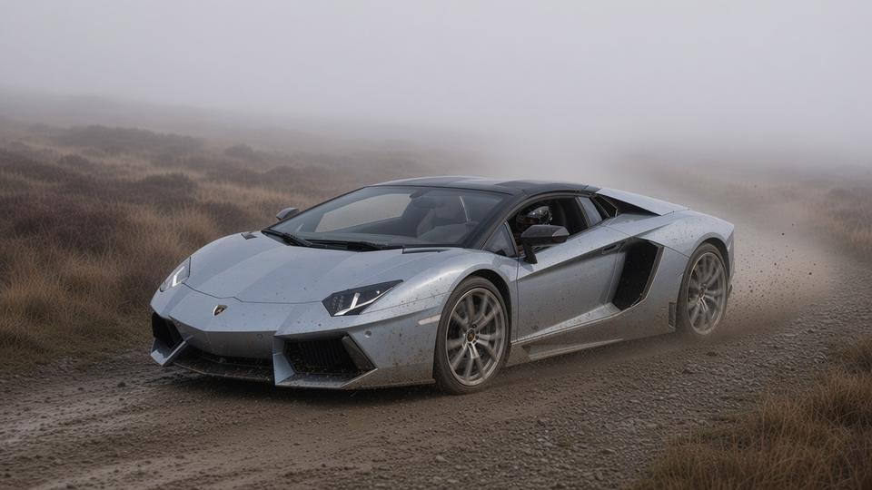
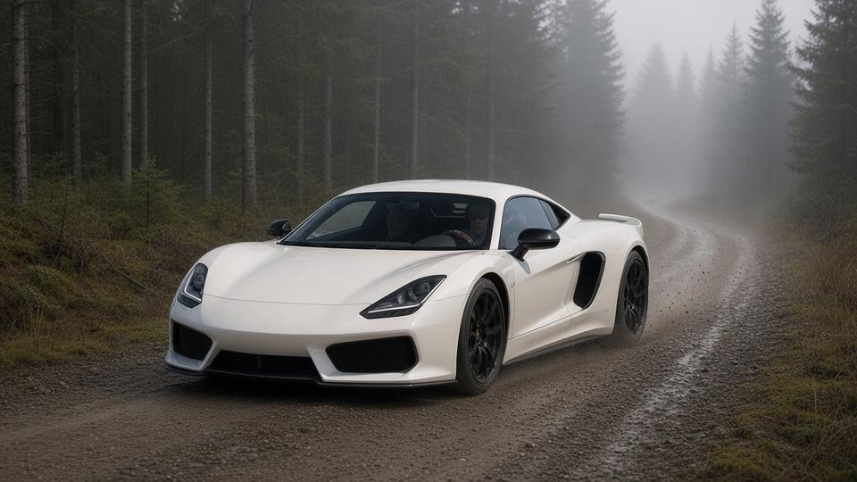
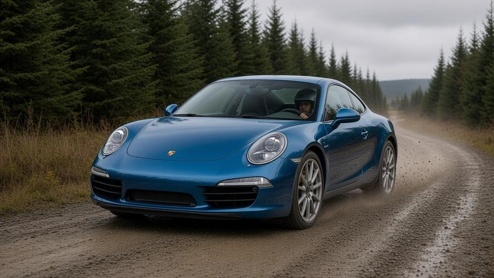

Final results
| Pos | Player | Car | Time | Gap | Pts |
|---|---|---|---|---|---|
| 1 | lacee5238 | Lambo Aventador Roadster '12 | 24:24.333 | Winner | 10 |
| 2 | thatonem4 | Ferrari 599 GTB 60F1 Alonso '11 | 26:16.474 | +1:52.141 | 8 |
| 3 | jimmykim3938 | Saleen S1 '17 | 26:24.075 | +1:59.742 | 6 |
| 4 | zehnx1006 | Porsche 911 (991) Carrera S '12 | 26:33.673 | +2:09.340 | 4 |
Group-round points: 1st 10, 2nd 8, 3rd 6, 4th 4. A DNF scores 0.
The venue
Stage format
Weather
| Split | Conditions |
|---|---|
| Split 1 · Sweet Lamb complex | 🌫️ Heavy fog |
| Split 2 · Hafren forest | 🌫️ Light fog |
| Finish · Hafren descent | ☁️ Overcast |
Start order
| Start | Player | Car | HP | Torque | Weight | Drive | Factory tires |
|---|---|---|---|---|---|---|---|
| 1 | jimmykim3938 | Saleen S1 '17 | 450 | 350 lb-ft | 2,685 lb | RWD | Continental (255/30ZR20 / 335/25ZR20) |
| 2 | zehnx1006 | Porsche 911 (991) Carrera S '12 | 400 | 325 lb-ft | 3,075 lb | RWD | Pirelli P Zero / Michelin Pilot Sport (N-rated) (245/35ZR20 / 295/30ZR20) |
| 3 | lacee5238 | Lambo Aventador Roadster '12 | 691 | 509 lb-ft | 3,818 lb | AWD | Pirelli P Zero (optional 20/21-in: 255/30ZR20, 355/25ZR21) (255/35ZR19 / 335/30ZR20) |
| 4 | thatonem4 | Ferrari 599 GTB 60F1 Alonso '11 | 611 | 448 lb-ft | 3,726 lb | RWD | not verified (std 599: 245/35ZR20 front, 305/35ZR20 rear) |
Start order drawn at random: one car at a time, starting one minute apart. Everyone runs their Pick 3 car.
Build-up
The round ends with a rally stage: Sweet Lamb Hafren from Wales Rally GB, 15.94 miles of gravel through the Sweet Lamb complex and the Hafren forest in mid-Wales, run one car at a time.
The drawn start order is jimmykim3938, zehnx1006, lacee5238, then thatonem4. Road cars on road tyres on gravel: heavy fog through the Sweet Lamb complex, light fog in the Hafren forest, then grey skies for the descent.
Split by split
Split 1 · Sweet Lamb complex

Heavy fog. lacee5238 goes off into the scenery and loses 17.7s, but is still fastest, 9:11.9. thatonem4 is 28.4s down, zehnx1006 35.8s and jimmykim3938 44.5s.
| Pos | Player | Car |
|---|---|---|
| 1 | lacee5238 | Lambo Aventador Roadster '12 |
| 2 | thatonem4 | Ferrari 599 GTB 60F1 Alonso '11 |
| 3 | zehnx1006 | Porsche 911 (991) Carrera S '12 |
| 4 | jimmykim3938 | Saleen S1 '17 |
Split 2 · Hafren forest

Light fog. lacee5238 leads by 1:12.2, and jimmykim3938 moves ahead of zehnx1006 into 3rd.
| Pos | Player | Car |
|---|---|---|
| 1 | lacee5238 | Lambo Aventador Roadster '12 |
| 2 | thatonem4 | Ferrari 599 GTB 60F1 Alonso '11 |
| 3 | jimmykim3938 | Saleen S1 '17 |
| 4 | zehnx1006 | Porsche 911 (991) Carrera S '12 |
Finish · Hafren descent

Overcast. zehnx1006 misses his braking point and loses 2.3s. lacee5238 sets the fastest split, 7:18.1, and wins by 1:52.1. thatonem4 is 2nd, jimmykim3938 3rd, 1:59.7 back, and zehnx1006 4th, 2:09.3 back.
| Pos | Player | Car |
|---|---|---|
| 1 | lacee5238 | Lambo Aventador Roadster '12 |
| 2 | thatonem4 | Ferrari 599 GTB 60F1 Alonso '11 |
| 3 | jimmykim3938 | Saleen S1 '17 |
| 4 | zehnx1006 | Porsche 911 (991) Carrera S '12 |
lacee5238 wins Group 7 Pick 3 Race 4, the Sweet Lamb Hafren rally stage, in the Lambo Aventador Roadster '12: 24:24.333 for the 25.6 km stage, 1:52.141 ahead of thatonem4.
Points: 1. lacee5238 (10 pts), 2. thatonem4 (8 pts), 3. jimmykim3938 (6 pts), 4. zehnx1006 (4 pts).
No DNFs: all four cars reached the finish.
Fastest split: lacee5238, 7:18.078 on split 3 (hafren descent).
Split times
| Player | Car | S1 | S2 | S3 | Incidents |
|---|---|---|---|---|---|
| lacee5238 | Lambo Aventador Roadster '12 | 9:11.886 | 7:54.369 | 7:18.078 | S1 went off into the scenery, +17.7 s |
| thatonem4 | Ferrari 599 GTB 60F1 Alonso '11 | 9:40.252 | 8:38.200 | 7:58.022 | Clean |
| jimmykim3938 | Saleen S1 '17 | 9:56.401 | 8:34.609 | 7:53.065 | Clean |
| zehnx1006 | Porsche 911 (991) Carrera S '12 | 9:47.651 | 8:45.720 | 8:00.302 | S3 missed braking point, +2.3 s |
Running time at each split
| Player | Car | Split 1 | Split 2 | Finish |
|---|---|---|---|---|
| lacee5238 | Lambo Aventador Roadster '12 | 9:11.886 | 17:06.255 | 24:24.333 |
| thatonem4 | Ferrari 599 GTB 60F1 Alonso '11 | 9:40.252 (+28.366) | 18:18.452 (+1:12.197) | 26:16.474 (+1:52.141) |
| jimmykim3938 | Saleen S1 '17 | 9:56.401 (+44.515) | 18:31.010 (+1:24.755) | 26:24.075 (+1:59.742) |
| zehnx1006 | Porsche 911 (991) Carrera S '12 | 9:47.651 (+35.765) | 18:33.371 (+1:27.116) | 26:33.673 (+2:09.340) |
Elapsed stage time at each split point, with the gap to the fastest car at that point. Split times table above: time for each section (S1 Sweet Lamb complex, S2 Hafren forest, S3 Hafren descent).